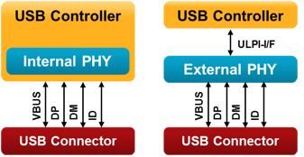

This chapter describes the software structure of the USB Device Component and its use for creating applications. The USB Device Component simplifies the software development of microcontroller systems that interface to a USB Host.
Attributes of the USB Device Component:
For interfacing to an USB Host Computer, additional software may be required. Page Interface to an USB Host Computer shows an example for such a software running on Windows PCs.
RTE Components
The picture shows the relationship between RTE Components and the microcontroller's USB Device peripheral (USB Controller). RTE Components provide configuration files and user code templates. Configuration files configure the RTE Components, hardware interfaces, memory resources and USB Device driver parameters. They can have an impact on multiple RTE Components (for example RTE_Device.h configures the USB Controller 0 and Driver_USBD0). User code templates implement the functionality of the USB Device Class.
The greyed area around the RTE Components USB Device 1 and Driver_USBD1, as well as USB Controller 1 means that are optional and can only be used if a microcontroller device has multiple USB controllers present. If this is the case, an USB Device Class can be connected to any of the USB Device Instances.
USB Device peripherals can have one or more of the following USB Device Classes:
- Audio Device class (ADC) is used to exchange streaming audio data between the USB Host and the USB Device.
- Communication Device Class (CDC) provides virtual communication port functionality to the USB Host.
- Human Interface Device (HID) is typically used to implement a keyboard, joystick, or mouse. The HID class can be also used for exchanging simple data.
- Mass Storage Class (MSC) is used to connect various storage devices to an USB Host. MSC is not limited to an USB stick, but can be an SD card, internal or external Flash memory, and even a simple RAM disk.
- Custom Class is used to implement either a standard or a vendor specific USB Device Class.
Generic information about USB Device Classes can be found on the USB-IF's Approved Class Specification Documents page.
Multiple RTE Component instances can interface with more than one USB Controller or can implement multiple USB Device Classes. RTE Component instances are numbered. The number is appended to the RTE Component name, related configuration files, and user code templates. Each RTE Component has a separate configuration file. For example, for HID 0 and HID 1 the configuration files have the name USB_Config_HID_0.h and USB_Config_HID_1.h.
- Note
- The default configuration settings are pre-configured for one instance of an USB Device or USB Device Class in a non-composite device peripheral. For other combinations the settings need to be edited to ensure proper operation. The USB Composite Device example shows how to implement and configure a composite devices
Create an USB Device Application
The steps to create a microcontroller application that uses USB communication with an USB Device controller are:
- Select RTE Components along with the USB Device Classes that are required for your application.
- Enable and configure the USB Device Driver.
- Configure the USB Device that connects the middleware to the microcontroller USB peripheral.
- Configure USB Device Class Configuration and USB Endpoint Settings for each selected USB Device Class and instance.
- Implement the User Code in the code templates that are provided for the USB Device Classes.
For interfacing to an USB Host computer, standard USB Device Classes drivers can be used. This may require additional software development for the USB Host application. An exemplary application for interfacing to an USB HID Device is explained here.
RTE Component Selection
Only a few steps are necessary to complete the RTE Component selection:
- From the USB Component:
- Select USB:CORE that provides the basic functionality required for USB communication.
- Set USB:Device to '1'. This creates one USB Device for communication with the USB Host.
- Select the desired USB Classes (HID, MSC, CDC, ADC). For example, set USB:Device:HID to '1' to create a single HID Class Device. If you select more than one class or multiple instances of the same class, you will create a Composite USB Device.
- From the Drivers Component:
- Select an appropriate USB Device driver suitable for your application. Some microcontrollers may have specific drivers for USB Full-Speed and High-Speed whereas other microcontrollers may have a combined driver.
- From the Device Component:
- Additional device specific drivers may be required according to the validation output.
- From the CMSIS Component:
- Select the CMSIS:CORE to provide the core interface to the processor.
- Select a suitable CMSIS:RTOS that is a required for the USB Component.

RTE Component Selection
- Note
- Most microcontrollers have only one USB Controller implemented in hardware and only one driver Driver_USBD0 is available. In this case, only one USB:Device can be selected to generate USB Device 0.
- On a single USB Device 0 an USB Composite Device may be implemented that combines multiple USB Device Classes.
- When a microcontroller implements multiple USB Controllers an additional USB Device 1 can be generated by setting USB:Device to '2'.
USB Driver and Controller
The USB Device Driver and the USB Controller of the microcontroller need to be correctly configured. In particular this means:
The USB Device Driver selected under the Drivers Component is typically configured with the RTE_Device.h configuration file. While this file provides multiple options, it is typically sufficient to enable the USB Device peripheral related to this driver. Some microcontrollers may require settings that related to a physical layer interface (PHY). The picture below shows two possible variants. Either, the USB PHY is integrated into the controller, or an external chip is used for providing the USB signal lines:

USB Controller and PHY Setups
- The Endpoint settings in the RTE_Device.h are only used to reduce memory requirements and may be adjusted in a later step.
- The USB Controller of the microcontroller typically needs specific clock settings. Consult the user's guide of the microcontroller to understand the requirements. Alternatively, you may copy the setup of an USB Device example (in case your hardware setup is similar to that of the chosen evaluation boards).
USB Device Configuration
The configuration file USBD_Config_n.c is listed in the Project Windows under the Component USB and contains a number of important settings for the specific USB Device.
- The Driver Number is set according to the selected USB Controller. For single USB Device Controllers it will be '0'.
- High-Speed may be selected if supported by the USB Controller.
- The Vendor ID (VID) needs to be set to a private VID. The default Vendor ID is owned by Keil and must not be used for actual products. Please visit USB-IF for more information on how to apply for a valid Vendor ID.
- Every device needs an unique Product ID. Together with the VID, it is used by the Host computer's operating system to find a driver for your device.
- The Device Release Number will be shown in Windows and Linux systems as “Firmware Revision”. The number will be interpreted as “binary coded decimal”, meaning that 0x0101 will be shown as firmware revision 1.01.
- The Manufacturer and the Product String can be set to identify the USB Device in PC operating systems.
USB Device Class Configuration and USB Endpoint Settings
The USB Device Class Parameters and Endpoint Settings are configured in separate files for each USB Device Class and separately for each instance. The configuration files contain Device Class specific Endpoint Settings Numbers and are listed in the Project Window under the Component USB.
- USBD_Config_ADC_n.h configuration for ADC Device Class.
- USBD_Config_CDC_n.h configuration for CDC Device Class.
- USBD_Config_HID_n.h configuration for HID Device Class.
- USBD_Config_MSC_n.h configuration for MSC Device Class.
- USBD_Config_Class_n.h configuration for Custom Class.
Each USB Endpoint can only be used once in the same USB Controller. It has to be made sure that the different USB Device Classes or multiple instances of the same USB Device Class use different Endpoints. The default configuration supports applications that use a single USB Device Class. The remaining parameters are specific settings that configure parameters for USB communication speed and the USB Device Class.
User Code Implementation
User code template files provide access to all functions that are required to communicate with the USB Device. The available functions are explained in the Reference section of the USB Component. These routines can be adapted to the needs of the microcontroller application, in case more functionality is needed.